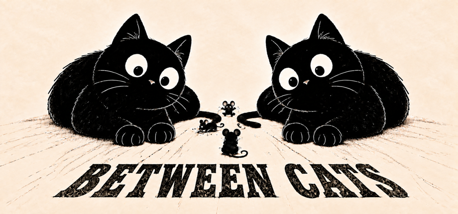

A puzzle by Maymaybe
A little room for mice.
Slide the cats. Find the spaces.
Let every little mouse peek out.

挪动猫咪，给小老鼠留出恰到好处的空间。
Small moves, clever puzzles.
Move cats of different shapes across the board. A mouse peeks out when its space is the only empty one in both its row and its column. Bring all the mice out at once to solve the puzzle.
Undo, reset, and hints let you explore at your own pace. Choose your favorite colors and cat coat patterns.
一步挪动，一点巧思。
拖动形状各异的猫咪。当一个空格同时是所在行和所在列唯一的空格时，小老鼠就会探头。让所有老鼠同时出现，就能完成谜题。
使用撤销、重置和提示，按自己的节奏寻找答案。也可以选择喜欢的配色和猫咪花纹。
The iOS edition
The planned iOS release includes 12 free main levels. A one-time in-app purchase unlocks the remaining main levels and return levels. There is no subscription. Later levels follow normal game progression.
App Store release details will be added here when available.
iOS 版本
计划发行的 iOS 版本提供前 12 个正式关卡免费试玩。一次购买可解锁其余正式关卡与归途关卡，无订阅。购买后仍按游戏通关顺序开放后续关卡。
App Store 上线信息将在发行后更新。
Need a helping paw?
购买恢复、游戏操作或相册保存遇到问题？
Visit support / 查看帮助